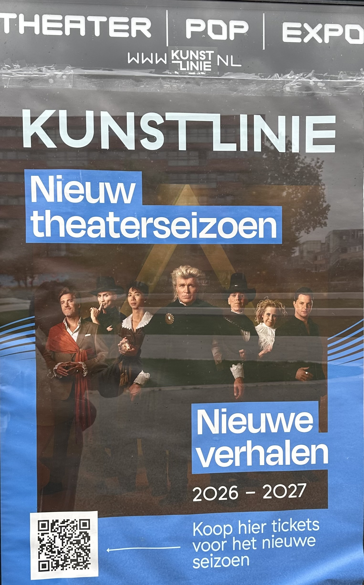
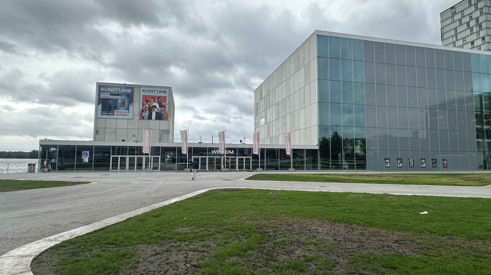
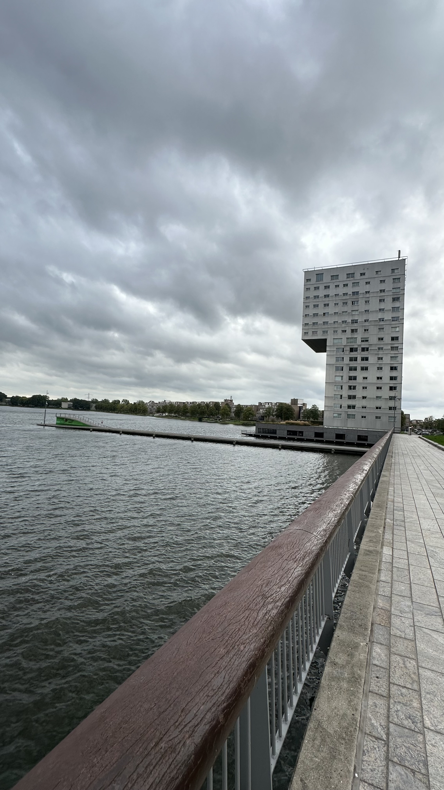
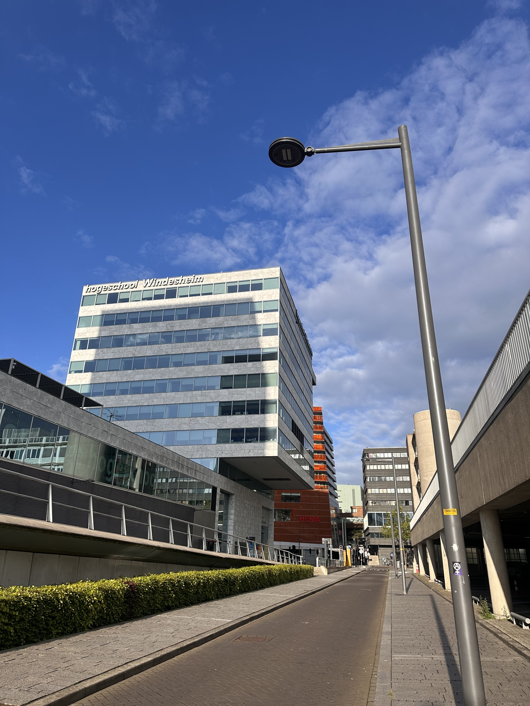

Architecture in Almere
Almere is known for its unique and modern buildings. The city features creative architectural designs and innovative residential complexes. Its architecture reflects creativity and contemporary design.

Almere is known for its unique and modern buildings. The city features creative architectural designs and innovative residential complexes. Its architecture reflects creativity and contemporary design.


A modern cultural center designed by SANAA. It features distinct building blocks that float smoothly over the Weerwater lake, housing theater spaces and an arts centre.

A striking 58-meter residential tower designed by UNStudio. Its unique, high-energy design changes shape depending on your viewing angle right on the edge of the water.

Designed by BDG Architecten, this vibrant campus building features a distinctive, perforated exterior facade that wraps around a spacious, open-air entrance courtyard.